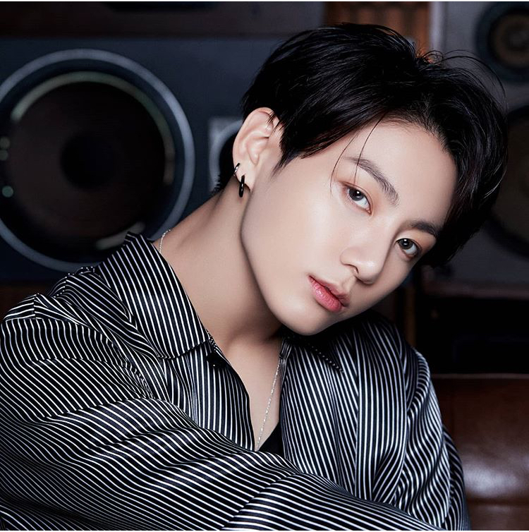

Jungkook
Nom réel: Jeon Jung Kook (전정국)
Nationalité: Sud-coréenne
Date de naissance: 01/09/1997 (Busan, Corée du Sud)
Début: 2013
Label / Agence: Big Hit Entertainment (2013 -)
Jung Kook est le chanteur principal du groupe BTS ainsi que le rappeur et danseur d'où son surnom "Golden Maknae" du fait qu'il soit aussi le plus jeune membre.
Source:
Nautiljon